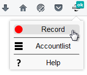
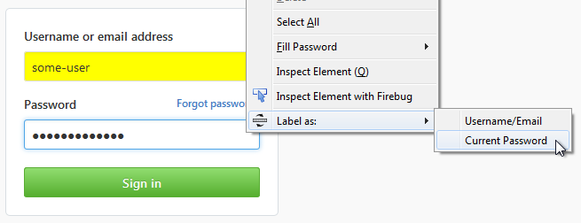
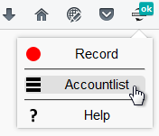
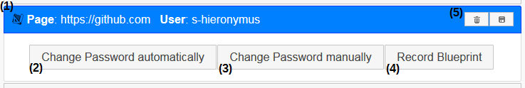
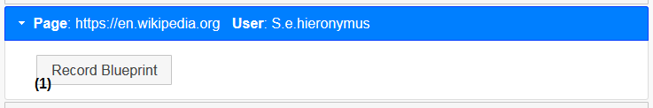
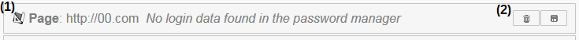

Hilfeseite
Eine Blaupause aufzeichnen
Alle Aktionen während des Aufzeichnens müssen per Klick durchgeführt werden. Ausgenommen davon ist die Eingabe von Text.
- Die aufzuzeichnende Seite aufrufen.
- Über den Addon-Button im Menü auf "Aufzeichnen" klicken.

- Zur Loginmaske navigieren. Alternativ kann die Aufzeichnung auch erst auf dieser Seite begonnen werden.
Der Login muss allerdings auf jeden Fall Teil der Aufzeichnung sein.
- Die Nutzerdaten eingeben und vor dem Absenden per Rechtsklick auf die Eingabefelder diese entsprechend als
Emailadresse/Benutzername bzw. aktuelles Passwort markieren. Sind die Felder korrekt markiert, werden diese gelb hinterlegt.

- Zur Passwort-Ändern-Maske navigieren.
- Aktuelles und neues Passwort eingeben und vor dem Absenden analog zur Loginmaske die Eingabefelder per Rechtsklick markieren.
- Passwortänderung abschließen und Ausloggen.
- Über den Addon-Button im Menü die Aufzeichnung beenden.
Die Accountliste
Die Accountliste ist über den Addon-Menüpunkt "Accountliste" zu erreichen.

Der Button rechts oben ermöglicht das Importieren von Blaupausen.
Es gibt drei mögliche Arten von Einträgen auf der Liste:
- Es liegen für eine Webseite Logindaten im Firefox-Passwortmanager vor und es ist eine Blaupause vorhanden.

- Das Vorhandensein einer Blaupause für diese Webseite wird durch ein Icon angezeigt (1).
- Bei einem Klick auf (2) ändert das Addon automatisch das Passwort für diese Webseite. Hierbei wird ein automatisch generiertes Passwort genutzt.
- Ein Klick auf (3) öffnet einen Tab, in dem die Passwort-Ändern-Maske der Webseite aufgerufen wird, damit das Passwort manuell geändert werden kann.
- Der Button (4) ermöglicht es, für diese Webseite eine neue Blaupause aufzunehmen. Die alte Blaupause wird dabei überschrieben.
- Löschen oder Exportieren der Blaupause ist mittels (5) möglich.
- Im Firefox-Passwortmanager liegen Logindaten für die Webseite vor, es ist jedoch keine passende Blaupause vorhanden.

- Ein Klick auf (1) startet die Aufnahme einer Blaupause für diese Webseite.
- Es liegt eine Blaupause für eine Webseite vor, für die keine Logindaten im Firefox-Passwortmanager vorhanden sind. Dies kann z.B. der Fall sein, wenn eine Blaupause importiert wurde.

- Ein Icon zeigt an, dass für diese Webseite eine Blaupause vorliegt.
- Mittels (2) kann die Blaupause gelöscht oder exportiert werden.